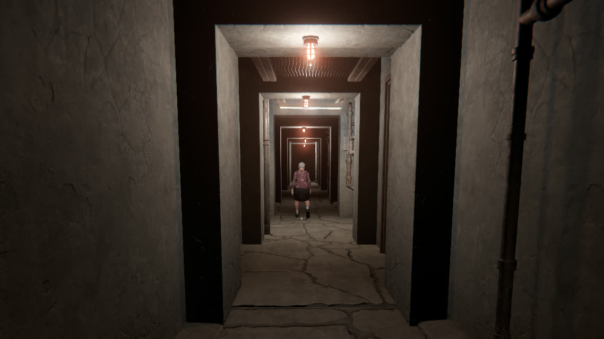
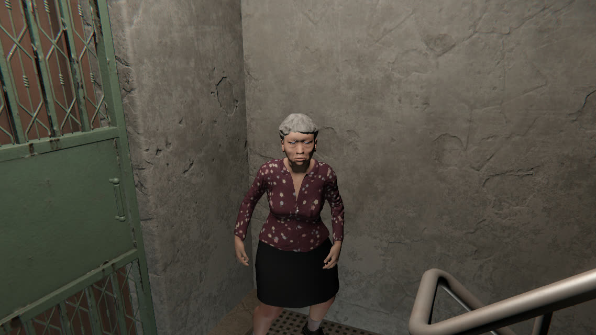
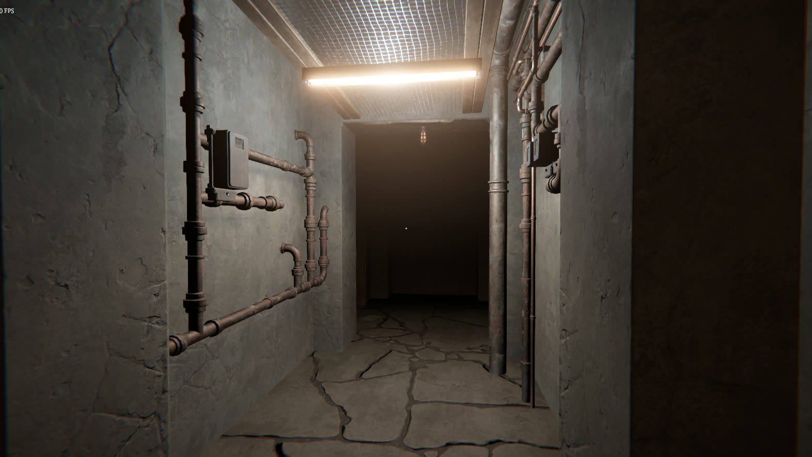
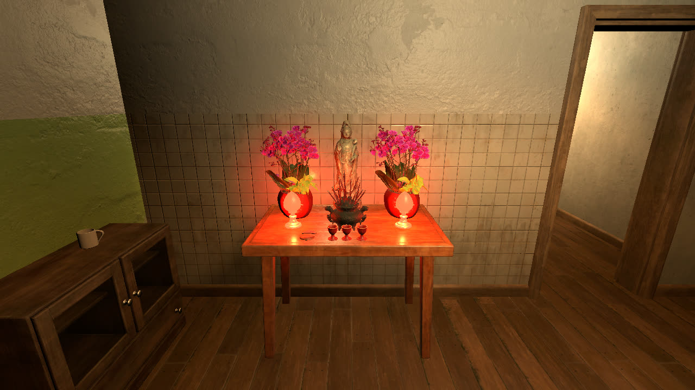
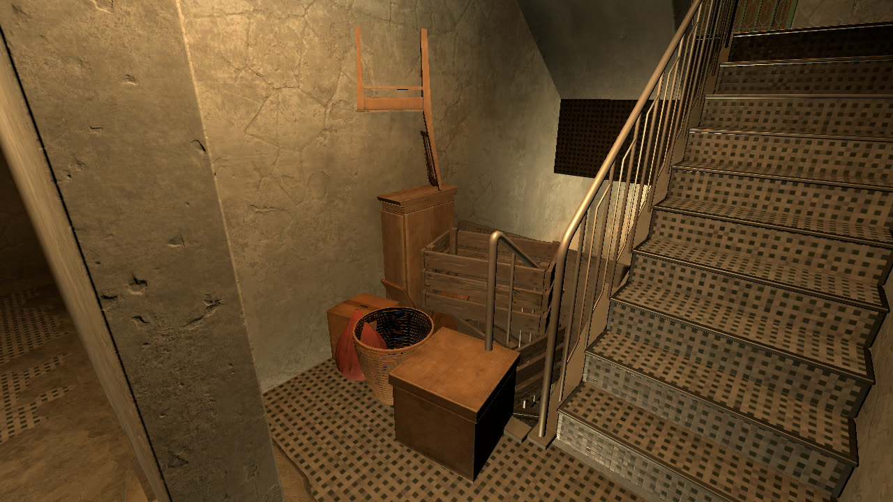
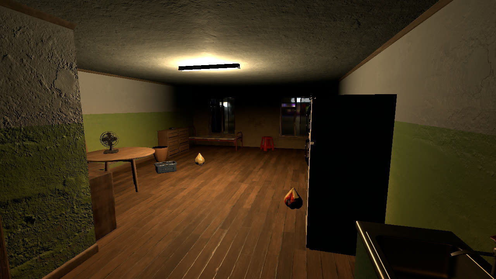

One building · One cat · One long night
The story
Charlotte lives on the seventh floor of an old walk-up building. No elevator, just the stairs. Her parents are waiting in the building across the alley, and the soup is getting cold.
But tonight the stairwell won't stay the way she remembers it. A neighbour says the fifth-floor lights are broken. A door has been sealed with paper. Somewhere below, someone keeps walking just out of sight.
Her cat Mia seems to know the way down. Whether you should follow her is another question.
只是下樓吃個飯。老公寓沒有電梯，只能走樓梯。今晚的樓梯間，卻跟記憶裡的不一樣了。

Inside the building





What waits inside
Knock on doors, step into neighbours' homes and piece together what happened here from letters, notes and things left behind.
敲門、走進鄰居家，從信件和遺留的東西拼出這棟樓的過去。
Mia hears what you can't. Listen for her bell in the dark. She usually knows which stairway is safe.
Mia 聽得到你聽不到的。黑暗裡，跟著鈴鐺聲走。
Some things only appear when the lights go out. When the power fails, a phone torch is all you have.
有些東西，只在燈熄的那一刻出現。
Release
On PC via Steam, and on iPhone & iPad via the App Store.
Screenshots are from a game in development.